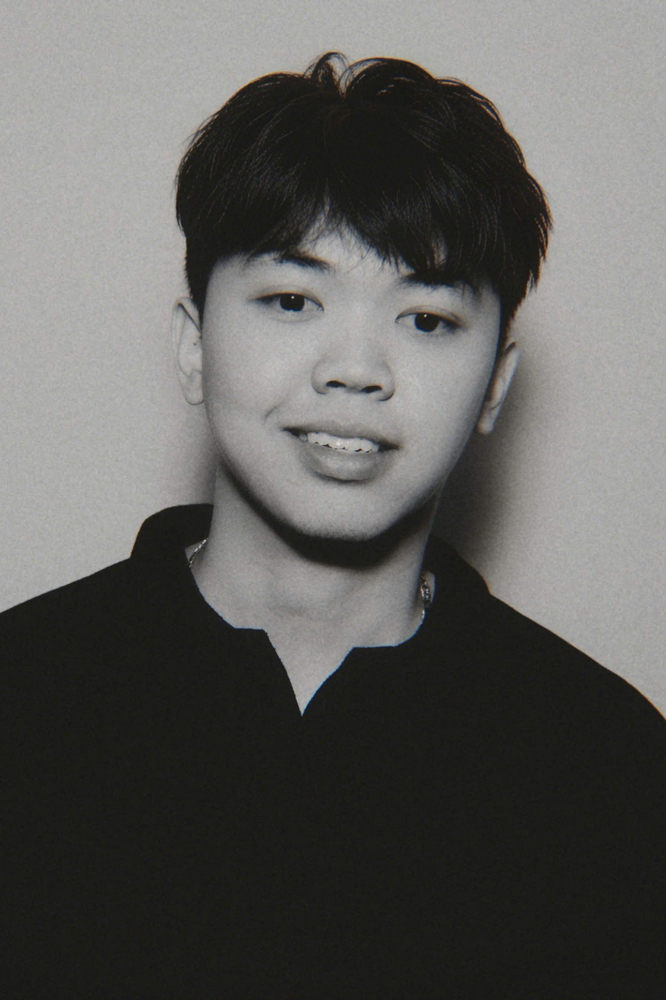

XIN CHÀO, TÔI LÀ
Xin chào! Tôi là Nguyễn Văn Quốc Bảo, hiện đang là sinh viên năm nhất ngành Công nghệ thông tin, quê quán tại Hà Nội. Tôi là người yêu thích công nghệ, có niềm đam mê tìm hiểu về máy tính, lập trình và các ứng dụng công nghệ trong cuộc sống. Tôi luôn mong muốn được học hỏi, khám phá những kiến thức mới và từng bước phát triển bản thân trong lĩnh vực Công nghệ thông tin. Hiện tại, tôi đang tập trung học tập và rèn luyện các kỹ năng lập trình như HTML, CSS . Bên cạnh kiến thức chuyên môn, tôi cũng chú trọng phát triển tư duy logic, khả năng giải quyết vấn đề và kỹ năng làm việc nhóm. Mục tiêu của tôi là trở thành một DESIGNER có kiến thức chuyên môn vững vàng, có khả năng xây dựng những sản hữu ích và không ngừng phát triển trong tương lai. "Học hỏi mỗi ngày – Phát triển không ngừng – Chinh phục công nghệ."
Tìm hiểu về tôi
Tôi là Nguyễn Văn Quốc Bảo, sinh viên ngành Công nghệ thông tin. Tôi đang từng bước học tập và phát triển kiến thức về lập trình, công nghệ và các kỹ năng cần thiết để trở thành một người làm việc trong lĩnh vực CNTT.
Tôi luôn mong muốn khám phá những kiến thức mới, nâng cao khả năng tư duy logic và tạo ra những sản phẩm hữu ích bằng công nghệ.
Họ tên: Nguyễn Văn Quốc Bảo
Ngành học: Công nghệ thông tin
Quê quán: Hà Đông, Hà Nội
Mục tiêu: Phát triển kỹ năng lập trình
Tìm hiểu máy tính, phần mềm và những công nghệ mới.
Chơi game và đá bóng sau những ngày học.
Nghe nhạc ballad tạo cảm giác thư giãn để tiếp tục cho công việc hoặc học tập.
HTML
CSS
Python
C++
Nếu bạn muốn kết nối hoặc trao đổi về công nghệ, hãy liên hệ với tôi.
Gửi email